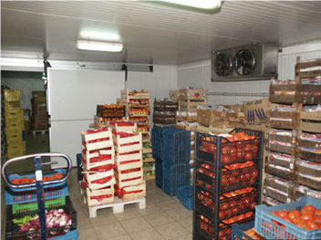
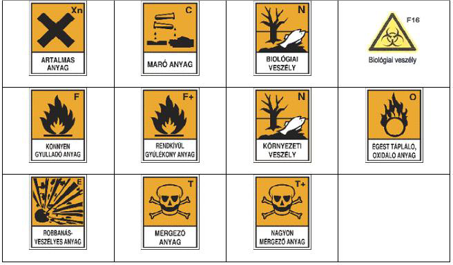
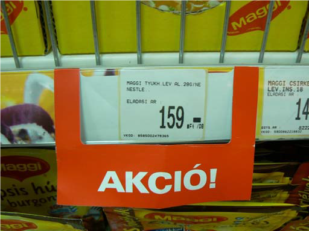
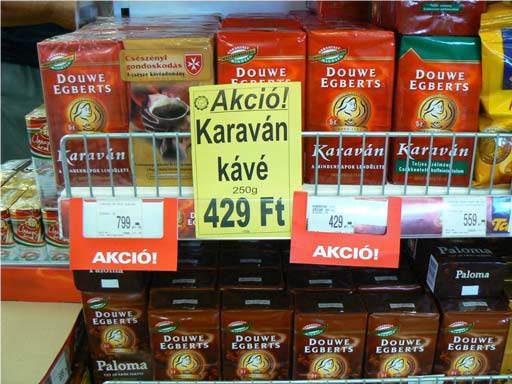
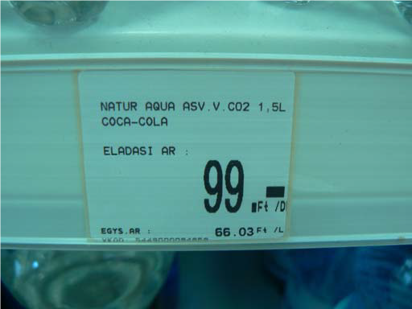

Csomagolástechnikai alapfogalmak
Csomagolószer:
Gyűjtőfogalom, tartalmazza a csomagolóanyagokat, csomagolóeszközöket és a csomagolási segédanyagokat.
Csomagolóanyag:
Alatt az áru burkolatának elsődleges anyagát értjük, amely alkalmas a csomagolási funkciók ellátására.
Csomagolási segédanyag
Szükség van rájuk a csomagolás során, mert a csomagolóanyagok önmagukban nem alkalmasak az áruvédelmet biztosító zárt védőburkolat létrehozására. Ilyen segédanyagok lehetnek pl. a zárást biztosító záró elemek (koronazárak, dugók,csavaros elemek), valamint a címkék, páramegkötő anyagok stb.
Kombinált csomagolás:
kettő vagy annál több csomagolóanyag tartós egyesítésével létrejött új anyag felhasználását jelenti, amelytől elvárható, hogy a korábbi csomagolóanyagok hátrányos tulajdonságait csökkentse vagy teljesen küszöbölje ki. Jellemzői a tökéletes záró képesség, amely megakadályozza a víz, vízgőz, a gázok, a levegő, az aromaanyagok, zsírok, olajok és a fény átjutását.
Csomagolástechnia:
Azoknak a műveleteknek az összességét jelenti, amelyek kialakítják a különböző áruk burkolatát, valamint azon anyagok és eszközök összessége, melyekkel ezen burkolatokat előállítják.
Élelmiszeripari célra legelterjedtebben alkalmazott csomagolóanyagok tulajdonságai és felhasználási területeik:
- műanyagok (polimerek),
- papír és karton,
- üveg,
- lakkozott, alumínium dobozok.
Tulajdonságok, felhasználási területek
Polimerek
- PP (polipropilén).: Széles körben használható. 110 fokig hőálló, így mikrohullámozható. Újrafelhasználása egyszerű.
- GPPS (általános célú polisztirol): Törékeny, újrafelhasználható. Főleg eldobható poharakat készítenek belőle.
- HIPS (ütésálló polisztirol): Hőformázott tálcák, poharak alapanyaga. Nem hőálló. Újrafelhasználható.
- EPS (habosított polisztirol): Tálca, doboz formában húsok, gyorséttermi termékek tárolására.
- LDPE (kis sűrűségű polietilén): Laminált anyagok, vákuum és védőgázas csomagolások alkotója. Az üzletláncok által használt bevásárló szatyrok, zacskók alapanyaga.
- HDPE (nagysűrűségű polietilén): Tej, ketchup, detergensek (szintetikus tisztítószerek) stb. palackok anyaga. Olcsó.
- PET (polietilén tereftalát): Széndioxid (vagy nem) tartalmú italok palackjai. Gyakran • laminálják kartonra mechanikai tulajdonságainak javítása céljából.
- PVC (polivinil-klorid): Palackok készítésére használatos. A lágy PVC főleg „frissentartó” fólia alapanyaga. Környezetvédelmi problémákat vet fel, ezért felhasználása visszaszorulóban van. - PA (poliamid, Nylon): Laminátumok (réteges, többféle anyagból készült csomagolóanyagok) alkotórésze. Drága.
- PC (polikarbonát): Cumisüvegek alapanyaga, szeszes italok igényes csomagolása. Magas ára miatt kevésbé használt.
- EVOH (etilén-vinil-alkohol kopolimer): Jó oxigén és széndioxid visszatartó képessége miatt széleskörűen használt kombinált (többrétegű) fóliákban (laminátumokban).
Papír és karton
- Előnyeik
- mechanikailag erős,
- biológiailag bontható, jó a környezetvédelmi megítélése,
- jól nyomtatható,
- olcsó,
- gyenge záróképességes társításával, bevonatokkal könnyen javítható,
- mikrohullámozható.
- Hátrányaik:
- porózus
- sérülékeny,
- nem átlátszó,
- nagy gáz, gőz áteresztő képesség,
- rossz aroma, illat megőrző képesség,
- nem zárható forrasztással,
- nem koextrudálható, laminátum csak ragasztóval készíthető.
Lakkozott, bevonattal ellátott fém dobozok
- Előnyeik:
- kitűnő gáz, vízgőz, fény, szagszigetelés,
- olcsó előállítás,
- mechanikailag erős,
- hermetikusan zárható, a termékek hősterilezhetők,
- az alumínium könnyen újrafeldolgozható.
- Hátrányaik:
- nem mikrohullámozható,
- az üres dobozok szállítása helyigényes,
- csak bizonyos méretekben és formákban gyártják,
- a fogyasztók ódivatúnak tekintik.
Üveg
- Előnyeik:
- nem áteresztő, nincs illata,
- újrafelhasználható,
- mikrohullámozható,
- kitűnő átlátszóság,
- kényelmes, praktikus,
- csúcsminőségű termékekhez használják
- Hátrányaik:
- törékeny,
- drága,
- nehéz.
Kombinált csomagolóanyagok
A különböző tulajdonságú anyagokat (papír, műanyag, fém) társítják, így olyan anyagokat állítanak elő, melyek egyesítik a résztvevő komponensek előnyös tulajdonságait. A kombinált anyagokra a tartós és biztonságos egyesítés jellemző. Kombinált anyagokat többféle módszerrel lehet előállítani. Legegyszerűbb a ragasztás, amikor két meglévő lapszerűanyagot ragasztóanyaggal egyesítenek.
- A kombinált csomagolóeszközök komponensek szerint:
- papír és műanyag: pl. levesporok, kockák, felvágottak csomagolására
- papír és fém: pl. kávé, cigaretta, keksz csomagolására,
- műanyag és fém: pl mogyoró burkolására,
- műanyag és műanyag: pl. tejes dobozok.
Új irányzatok
Aktív csomagolóanyagokat
Bizonyos aktív anyagokat (pl.: antimikrobiális, antioxidáns hatású) a csomagolóanyagba integrálva, kovalensen vagy fizikailag hozzákötve, a felületére felhordva, azok képesek a csomagolt élelmiszer fogyaszthatóságát (minőségmegőrzését, kémiai, mikrobiológiai stabilitását) növelni. Hasonló eredmények érhetők el az élelmiszerekből származó bizonyos anyagok (pl.: nedvesség) elnyelésére képes csomagolással.
Intelligens csomagolóanyagok
Olyan jelző anyagokat tartalmaznak, amelyek képesek az élelmiszer egyes paramétereinek (pl.: hőmérséklet, pH) megváltozását jelezni.
Környezetbarát csomagolóanyagok
A petrolkémiai úton előállított műanyagok, polimerek gyakorlatilag nem bomlanak le a természetben (perzisztensek). A leggyakoribb megsemmisítési mód, az égetés, a legkorszerűbb technológiák alkalmazása mellett is terheli a környezetet. Az újrafelhasználás sem oldja meg, csak enyhíti a problémát. Sok gyártó dolgozik olyan csomagolóanyagok kifejlesztésén, amelyek biológiailag lebonthatók. Azaz amelyek mikroorganizmusok közreműködésével vagy környezeti hatásokra (oxigén, napfény, nedvesség, stb.) egyszerű, ártalmatlan molekulákra bomlanak. Léteznek már ilyen anyagok, de használatuk még kevésbé elterjedt. Gyakorlati tulajdonságaik még nem veszik fel a versenyt a hagyományos anyagokéval. Többségük növényi eredetű keményítőből készül, biotechnológiai úton. Ilyen pl. a poli-tejsav (poly lacticacid, PLA). Vannak kémiai eljárások is a létező műanyag csomagolóanyagoknak a megfelelő környezeti hatások által lebonthatóvá tételére is.
Csomgolási alapegységek
Fogyasztói - elsődleges - csomagolás: értékesítési egységet képez a végső felhasználó vagy fogyasztó számára a vásárláskor, valamint közvetlenül érintkezik a védendő termékkel. Ezen csomagolás kiemelt célja a fogyasztó figyelmének felkeltése, így megítélésének befolyásolása.
Gyűjtő - másodlagos - csomagolás: amely a vásárlás helyén meghatározott értékesítési egységet foglal össze, a felhasználó részére történő értékesítéstől függetlenül. A fogyasztói csomagolástól elkülöníthető, anélkül, hogy annak alapvető tulajdonságait befolyásolná. Fő feladata az árukezelés, raktározás, szállítás megkönnyítése.
Szállítási - harmadlagos - csomagolás: a fogyasztói vagy gyűjtőcsomagolás kezelését, szállítását továbbá a fizikai kezelésnél és szállításnál történő károsodás elkerülését elősegítő csomagolás. Sok esetben összetett csomagolásról van szó, amely külső és belső csomagolásból áll, ennek megfelelően elsődlegesen védelmi funkciója van.
Készítette: Hegedüs Ferenc
Tárolás a kereskedelemben
Tárolás a kereskedelmi áruforgalomhoz kapcsolódó, sokfajta árut felhalmozó, a fogyasztóiigények zökkenőmentes kielégítését elősegítő tevékenység. Raktározás az a tevékenység, amelynek során nagy értékű, fajtánként elkülönített árut halmoznak fel a célnak megfelelően felszerelt helyiségben.
Az árutárolás hagyományos helyszínei a raktárak. A raktározás helyének megválasztásakor több szempontot kell figyelembe venni. Ezek a következők:
- a kereskedelmi tevékenység jellege (nagy-, vagy kiskereskedelem)
- az áru jellege,
- az alkalmazott értékesítési mód,
- a vállalkozás pénzügyi helyzete.
A kereskedelmi tevékenység jellege meghatározza a vállalkozás készletigényét, ez pedig a raktárakkal szembeni követelményeket. A nagyforgalmú áruházaknak nagy tömegű áruk tárolását kell elvégezniük. Ehhez nagy alapterületű, jól megközelíthető raktárakra van szükségük, melyek lehetnek az áruházhoz kapcsolódó, és a városközponton kívül bérelt raktárak. A viszonylag alacsony forgalmú üzletek a termékek raktározását többnyire a kereskedelmi egységhez kapcsolódó raktárakban végzik.
A raktárak méretét befolyásolja az alkalmazott értékesítési mód is. A hagyományos értékesítési módot alkalmazó egységek a készletek nagyobb részét helyezik el a raktárban, kisebb részét az elárusító térben. Az önkiszolgáló értékesítési mód esetén ez az arány megváltozik. A készlet jelentős része az árusítótérbe kerül, kisebb része a raktárba. A minta utáni értékesítési mód alapvetően a készlettartás költségeivel való takarékoskodás miatt alakult ki. Az árubemutatás és rendelésfelvétel a városközpontok bemutató-, illetve mintatermeiben, a nagy terjedelmű áruk készletezése pedig az olcsóbb külvárosi raktárakban történik.
Raktárokkal szemben támasztott követelmények:
- Védjék meg a tárolt áru mennyiségét és minőségét,
- Korszerű árumozgatást és tárolást tegyenek lehetővé,
- Megfelelő munkakörülményeket biztosítsanak,
- Jól megközelíthetőek legyenek (szállítójárművekkel).
A raktározás során az árukat rendszerezve, megfelelő felszereltségű raktárban helyezik el. A raktárakat úgy kell kialakítani, hogy biztosítani tudjuk az áruk minőségének megőrzését, valamint a raktári készletek áttekinthetőségét.
A bolti árutárolás összetett munkafolyamat, amelynek szakaszai a következők:
- a raktári rend kialakítása,
- a beérkezett és átvett áruk elhelyezése,
- az áruk folyamatos ellenőrzése és gondozása,
- az áruk előzetes szortírozása az elárusítóhelyek feltöltéséhez.
A raktári rend kialakítás során a vezetőknek meg kell határozniuk:
- a raktárért felelős dolgozókat,
- az egyes áruk helyét és tárolási módját,
- a raktár egyes területein elhelyezhető áruk mennyiségét, súlyát (tárolóberendezések terhelhetőségének figyelembevételével).
Az árukat a raktárban úgy kell elhelyezni, hogy
- az áruk károsodását, állagromlását megakadályozzuk,
- a készletek áttekinthetőek, könnyen mozgathatók legyenek,
- a helykihasználás minél kedvezőbb legyen,
- a vagyon- és tűzvédelmi teendőket, a balesetvédelmi és közegészségügyi szabályokat.
Az áruk károsodásának, állagromlásának megakadályozása
A raktári árutárolás összetett feladat, magába foglalja az áruk:
- elhelyezését,
- kezelését és
- védelmét.
Az áruk elhelyezkedése a raktárban az áruk fizikai tulajdonságaihoz és forgalmához igazodik.
- A speciális tárolási körülményeket igénylő árukat külön helyiségekben tárolják. Így hűtőkamrákban tartják a mélyhűtött termékeket, tejtermékeket, hentesárut stb.
- Megfelelő páratartalom szükséges a papíráruk raktározásához.
- Azokat az árukat, amelyek károsan hatnak egymásra elkülönítve tárolják. (közegészségügyi, és élemiszerbiztonsági előírásoknak megfelelően)
- Az élelmiszereket és a vegyi árukat külön helyiségekben raktározzák.
- Fontos, szempont, hogy a gyorsan fogyó áruk helye az eladótérhez vezető átjáró közelében legyen.
- A nagyobb súlyú-, terjedelmű termékeket a polcok alsó részén helyezik el, az apróbb, kisebb méretű, súlyú termékek, kerülhetnek feljebb.
Az árukat leginkább a különböző külső hatások, az úgynevezett igénybevételek veszélyeztetik
- Mechanikai igénybevételek pl. ejtés, ütközés, buktatás, nyomás, rázás stb.
- Klimatikus igénybevételek pl. hőmérséklet (ha túl magas vagy túl alacsony), a levegő páratartalma, légköri szennyeződések, napfény (ultraibolya sugárzás)
A leggyakoribb áruváltozások, melyektől meg kell óvni a terméket:
| Fizikai változások | Kémiai változások | Biológiai változások | |
| Nedvesség | Lágyulás | Vitamin bomlása | Szagváltozás |
| Száradás | Párolgás | Avasodás | Gombásodás |
| Elszíneződés | Ragacsosodás | Kereskedés | Erjedés |
| Fagyás | Szakadás | Ecetesedés | Csírázás |
| Olvadás | Alakváltozás, nyomódás | Műanyagok öregedése | Rothadás |
| Törés, felületi sérülések, ütés | Zsugorodás | Korrózió | Penészesedés |
| Duzzadás | Fehérjetartalmú anyagok barnulása | ||
Fizikai változások esetén a termékek még forgalomba hozhatóak, de csak csökkentett áron. Az így forgalomba hozott termékeken jól látható helyen fel kell tüntetni a minősítéscsökkenés okát! A kémiai és biológiai áruváltozások után a terméket forgalomba hozni tilos, ezeket a termékeket el kell különíteni a többi árutól, és le kell selejtezni!
Élelmiszerek és vegyiárul tárolása
Az élelmiszerek tárolásakor szigorú közegészségügyi, és élelmiszerbiztonsági előírásokat kell betartani.
Élelmiszer termékek tárolásának általános szabályai:
- Épületen kívúl, szabad területen élelmiszert még átmenetileg sem szabad tárolni!
- Az élelmiszerek közvetlen a padozatra helyezni TILOS! Az élelmiszert alátéten kell tartani, ami lehet: műanyag raklap, alátét, láda vagy rekesz. Kivételt képeznek a földben termő zöldség- és gyümölcsfélék, palackozott italáruk, melyek a padozaton is tárolhatók.
- Az árukat a FIFO elv („először be-, először ki”) figyelembe vételével kell elhelyezni. Ez azt jelenti, hogy azonos áruféleségek esetében azokat helyezzük előre, amelyek fogyaszthatósági idejük előbb jár le, így azok fognak először felhasználásra kerülni.
- A termékek azonosíthatóságát teljes felhasználásukig biztosítani kell, az eredeti termékcímkéket átírni, átfirkálni, eltávolítani tilos!
- Az árukészletet folyamatosan felül kell vizsgálni és a romlott, sérült, szennyeződött, lejárt, vagy egyéb okból fogyasztásra alkalmatlan terméket el kell különíteni. Az elkülönítés helyét feltűnően jelölni kell, pl. „SELEJT”, EMBERI FOGYASZTÁSRA ALKALMATLAN”, „FORGALOMBÓL KIVONVA” felirattal.
Az élelmiszer árukat a gyártótól a felhasználóig jellegüknek, összetételüknek megfelelően szakosítottan kell elhelyezni, tárolni!
Ennek megfelelően a kereskedelmi egységek az alábbi szakraktárakat alakítják ki:
- Szárazáru raktár,
- Hűtő raktár,
- Földesáru rakár,
- Vegyi raktár
Szárazáru raktár:
Ide kerülnek a csomagolt élelmiszerek, fűszerek, tartósított húskészítmények, esetleg konzervek, befőttek, zsírok, olajok, liszt, rizs, búzadara, cukor, italáru és a kenyér. Az itt tárolt termékek jelentős része gyárilag csomagolt és legfeljebb mechanikai tisztítást igényel felhasználás előtt.
Különös gonddal kell óvni őket az utólagos szennyeződéstől.
- Az itt tárolt árucsoportokat egymástól jól elkülönítve kell tárolni!
- Meg kell őrizni az eredeti csomagolást, csak így lesz lehetőség a könnyű azonosításra, a minőség megőrzési időtartamok ellenőrzésére!
- A csomagolatlan nyers, füstöléssel, érleléssel tartósított húskészítményeket száraz, jól szellőző helyen, zsúfoltságtól mentesen felakasztva, elkülönítetten kell tárolni, és csepptálcát kell alátenni!
- A méréshez, adagoláshoz mindig tiszta eszközöket kell használni!
- Áru soha nem kerülhet közvetlenül a padozatra, zsákos áru nem támaszkodhat közvetlenül a falhoz!
- A polcokon soha ne legyen papír, textil, stb. alátét. Ezek gyorsan szennyeződnek, nem takaríthatók, alattuk összegyűlik a por, piszok. A polcok legyenek könnyen tisztán tarthatók, sima vízálló felületűek.
- Ha kenyeret is tárolnak itt, különös gonddal óvjuk a szennyeződéstől, befülledéstől! A kenyér tárolása e célra szolgáló polcokon, aljzattól 50 cm-re, élére állítva, porszennyeződéstől védve történhet, vagy a szállítórekeszekben alátétre helyezve.
- A kenyér és pékáru konténereket, adagolókat minden este megfelelően ki kell takarítani, hisz az ott maradó morzsák illetve pékáru törmelékek penészesedéshez vezethetnek.
- Soha nem kerülhet ebbe a raktárba olyan áru, ami szennyezheti az itt tárolt élelmiszereket (pl. déligyümölcs, tisztító, fertőtlenítőszer, tojás stb.). Ha mégis, komoly esélyt ad egy ételmérgezés, ételfertőzés előfordulásának.
A szárazáru raktárban tilos a nyílt láng használata, így tilos a dohányzás is. Ennek tényét ki kell függeszteni!
Hűtő raktár
A hűtést igénylő termékeknél biztosítani kell a hűtőláncot!
A hűtőlánc alatt azt értjük, hogy a hűtést igénylő élelmiszerek számára az előállítástól a fogyasztónak történő átadásig, a számára előírt hőfok megszakítás nélkül biztosított.
A hűtött élelmiszert 0 – és +5 oC közötti, illetve a gyártó által előírt hőfokon, a gyorsfagyasztott készítményt -18 °C alatti, illetve a gyártó által meghatározott hőmérsékleten kell tárolni.
- az emlősállatok húsát 0-5 °C közötti,
- a baromfihúst 0-4 °C,
- a friss halat az olvadó jég hőfokán (lehetőleg jégdarán egy rétegben elhelyezve, vagy jégdarával átrétegezve), illetve –2 - +2 °C,
- a mélyhűtött termékeket -18 °C alatti,
- a fagyasztott csirkét -12 °C alatti hőmérsékleten kell tárolni
A hűtőszekrények üzemeltetésénél fontos követelmény, hogy legyen elkülönítve:
- a tőkehús,
- a baromfihús,
- a hal,
- a vad,
- a zöldség-gyümölcs,
- a tej és tejtermékek,
- a húskészítmények,
- a cukrászati készítmények,
- a hidegkonyhai termékek tárolására használt hűtő.
A gyorsfagyasztott, csomagolt hús, tisztított zöldség és gyümölcs, a félkész étel, a csak felmelegítést igénylő készétel, a fogyasztásra kész élelmiszer és a fagylalt, fagylaltjellegű készítmény közös fagyasztótérben is elhelyezhető, egymástól elkülönítve. Az elválasztás rögzített, résmentes, könnyen tisztítható, fertőtleníthető válaszlappal történhet.
A hűtést, illetve fagyasztva tárolást igénylő élelmiszerekből csak olyan mennyiségű készletet szabad tartani, amelyhez a hűtő-, fagyasztókapacitás szakosított elhelyezés esetén is elegendő. A hűtőberendezésben az élelmiszereket úgy kell elhelyezni, hogy a hűtőhatás megfelelően érvényesüljön.
A forgalmazás során tilos az eredetileg fagyasztott, de felengedett áru visszafagyasztása, a már felengedett áru árusítása!
Földesáru raktár
A földdel, szerves és szervetlen trágyával, vegyi anyagokkal (pl. növényvédő szer), élőlényekkel (pl. rovar, rágcsáló) stb. szennyezett áruk kerülnek elhelyezésre. Ha nincs külön raktár, ide és csak ide kerülhet be a tojás, természetesen egyéb árutól jól elkülönítve.
Ha az üzlet nem rendelkezik földesáru raktárral, akkor ezek a termékek közvetlenül az eladótérbe kerülnek elhelyezésre.
A zöldségek gyümölcsök minőségének megőrzésében nagy szerepe van a megfelelő tárolási hőmérsékletnek, a páratartalomnak, az árukezelésnek.
Minden élőlény, legyen az növényi, vagy állati eredetű, legnagyobb alkotóeleme a víz, tömegének jelentős részét ez teszi ki. A cél a termék minél hosszabb ideig, minél jobb állapotban, minél kevesebb súlyveszteséggel történő tárolása pozitív hőmérsékleten, fagyasztás nélkül. Ennek érdekében 4 alapvető kritériumnak kell eleget tenni, melyek a megfelelő kezelés, hőmérséklet, páratartalom és etilén szint biztosítása.
Kezelés: Az egyik legalapvetőbb szempont. A rakodás során, az általános elővigyázatosságon túl fontos figyelembe venni, hogy a rekeszek, dobozok ne legyenek túlrakodva, egymásra rakása során ki kell zárni, hogy a felső láda alja az alatta lévő ládában tárolt termékekhez hozzáérjen, legyen légmozgás a rekeszek és a sorok között. Ellenkező esetben a belső termékek hőmérséklete nem biztosítható az optimális értéken, a megrekedt levegő etilénkoncentrációja megnő, fokozódik a cseppesedés, ami együttesen a termék idő előtti rothadásához vezet. Ilyen körülmények között terméktől függően néhány naptól 1-2 hétig terjed a tárolhatósági idő.
Hőmérséklet: A tárolási hőmérséklet csökkenésével valójában a termék öregedési folyamatát lassítjuk, így élettartama hosszabb lesz. Legoptimálisabb általában, ha a terméket 0,5-2 °Ckal annak fagyáspontja felett tároljuk. Minél közelebb van a termék hőmérséklete a fagyáspontjához, annál lassúbbak az érési folyamatok, ill. az alacsonyabb hőmérsékleten a magas relatív páratartalom biztosítása is kevesebb kipárolgással, súlyveszteséggel jár. Rendkívül fontos azonban, hogy a fagyáspontot túllépni nem szabad, mert az a rostok roncsolódását, az áru tönkremenetelét okozza. Nagyon fontos továbbá, hogy fagyáspont közeli hőmérsékleten tárolt növényre közvetlenül ne kerüljön víz, mert a felületről történő elpárolgás további hűtőhatással jár, ami a fagyáspont felett tárolt növény felületi fagyását, így szövetroncsolódást okozhat.
Páratartalom: Nagy nedvességtartamuk folytán a zöldségek, gyümölcsök felületükön keresztül folyamatosan párologtatnak. Betakarítás után, a nedvesség utánpótlás megszűnésével ez a tulajdonságuk továbbra is megmarad, sőt fokozottabbá válik egy gyors légmozgású hűtött tárolóhelyiségben. Éppen ezért e kipárolgás mértékének alacsonyan tartása elemi fontosságú a hatékony tárolás során. A terméket körülvevő környezet magasabb páratartalma lelassítja ezt a folyamatot, elősegítve, hogy a termék megtartsa saját nedvességtartalmát. Egy átlagos üres hűtött tároló relatív páratartalma 55%. Mivel a friss zöldségek, gyümölcsök nedvességtartalma átlagosan 95-98%, az 55% relatív páratartalmú levegő, mint egy száraz szivacs, annyi nedvességet vesz fel, amennyit csak tud. Ez az oka, amiért már betárolás előtt célszerű magas értékre emelni a hűtött tároló levegőjének relatív páratartalmát. Minél közelebb van a levegő páratartalma a növényéhez, annál kisebb mértékben történik nedvességvesztés. Mára már elterjedt technológia az ún. RO (Reverse Osmosis) szűréssel ellátott nagynyomású levegő-víz porlasztásos párásítás, ami a mai napig a leghatékonyabb szabályzást teszi lehetővé.
Etilénszint:Az etiléngáz (C2H4) minden növény növekedési folyamatában fontos szerepet játszik. Elősegíti az érési folyamatokat, a telt íz és szín kialakulását. Betakarítás után azonban hatása már koránt sem kívánatos. Már 1 milliomod résznyi etilén is képes felgyorsítani az érési folyamatokat, lerövidítve az eltarthatóság idejét. Mivel a növények betakarítás után is termelik az etilént, ill. ki vannak téve a környezetben lévő más etilén forrásoknak, a zárt rendszerű hűtőtárolók levegője idővel telítődik. Az így felhalmozódó etilén gáz eltávolítása nélkül az optimális tárolási idő jelentősen lecsökken. A zárt helyiség levegőjét ventilátorral át kell keringtetni, és meg kell szűrni. A szűrő semlegesíti a szagokat és a hidrokarbon gázokat, köztük az etilént is, ártalmatlan hidrokarbonná és vízzé alakítja. Hasznos lehet az UV fénnyel történő megvilágítás is. Az UV sugárzás megöli a levegőben lévő spórákat, csírákat, baktériumokat, vírusokat, gombákat, penészt, ezzel lassítja az érési folyamatokat, megakadályozza a termékek rothadását.
Földesáru raktár árukezelési szabályai
- Az áruromlás megakadályozása végett ezeket, a termékeket naponta többször meg kell forgatni, át kell válogatni, a minőségileg károsodott termékeket ki kell szedni, el kell különíteni!
- A zöldség- gyümölcs tárolására szolgáló ládák, rekeszek egyéb élelmiszer tárolására nem felhasználhatóak!
- A földesárukkal való foglalatosság után munkaköpenyt kell cserélni, és alaposan kezet kell mosni!
Néhány élelmiszer termékre vonatkozó tárolási szabály:
- Tojás: törvény is kimondja, hogy mosott tojást árusítani nem szabad. Ennek oka abban rejlik, hogy ha megmossuk a tojást, akkor megszűnik a természetes védőrétege, és nem tud ellenállni a kórokozóknak. Mosatlanul 5 fok alatt tárolva 2-3 hétig is eláll. A tojás tárolása során csak olyan rakatokat szabad képezni, ami biztosítja a tojáshéj épségének megőrzését. A tojást 2-18 °C közötti hőmérsékleten kell tárolni.
- A nyers, hámozatlan burgonya hosszabb idejű tárolását hűvös, sötét helyen kell biztosítani a csírázása megakadályozása érdekében. A csirázott burgonyát csirátlanítani kell!
- A bogyógyümölcsök közül a szamóca és a málna a legszakszerűbb körülmények között is csak néhány napig tárolható minőségi veszteségek nélkül.
- A többi bogyós és csonthéjas gyümölcs legfeljebb 4-6 napig tartható el rövidebb időtartamú (átmeneti tárolással).
- Más gyümölcsök kedvező körülmények között több évig, hónapig is elállnak. A legkorszerűbb tárolókban, ahol a hőmérséklet és a légnedvesség (relatív páratartalom) mellett még a levegő összetétele is szabályozott, akár egy évig is eltartható például a téli alma.
Banán tárolása:
- éretlen banán esetén: becsomagolva kell hagyni, és meleg helyre kell tenni, olyan utóérő, érett gyümölcsöt kell mellé tenni, amely etiléngázt bocsát ki éréskor. Pl.: alma, kiwi
- érett banán esetén: ki kell bontani a műanyag fóliát a kartonban, és hűvös helyre kell elhelyezni, minél előbb értékesíteni kell, ha szükséges árkedvezménnyel!
Vegyiáru raktár
A vegyipari termékek tárolása minden más terméktől jól elkülönítetten történik. A termékek tárolhatósága függ:
- az anyag összetételétől,
- a hőérzékenységétől,
- a nedvességre és fényre való érzékenységétől,
- az áru veszélyességi fokától,
- és a csomagolás módjától.
A környezeti hatások a termék stabilitását és tárolhatóságát nagymértékben meghatározzák, ezért fontos, hogy a tárolási körülmények megfeleljenek a termékek jellegének.
Erős hőmérsékletingadozással járó páralecsapódás a por alakú készítmények csomósodását, egyes nagy víztartalmú készítmények penészesedését okozhatja. A tárolásnál biztosítani kell a raktár rendszeres szellőztetését, áruvédelmi, egészségügyi és tűzveszélyességi okok miatt.
A vegyipari termékeket egészségre és környezetre való hatásuk alapján két fő csoportba soroljuk:
- veszélyes és
- nem veszélyes készítmények.
Veszélyes áruk
A háztartásokban használt tisztítószerek, festékek stb. nagy része veszélyes készítmény. Ezen anyagok jelölését és feliratozását a “A veszélyes anyagokkal és készítményekkel kapcsolatos eljárásról szóló 233/1996. (XII.26.) Korm. Rendelet és annak végrehajtási utasítása írja elő.
A termékeken a veszélyszimbólumok és jelek mellett az anyag felhasználásakor jelentkező veszélyre utaló, és az azt kiküszöbölő tennivalókat közlő mondatokat is fel kell tüntetni.
Veszélyes anyagok és készítmények csomagolásának néhány jelölési követelménye: EU szabvány alapján, narancssárga alapon fekete színnel kell feltüntetni, a veszélyességi osztálynak megfelelõ szimbólumot. A címke alapszíne olyan legyen, hogy a veszélyességi szimbólum színe attól elüssön.
Az áru tárolására, raktározására vonatkozó figyelmeztető jelzések

Vegyiáruk tárolási szabályai
- A vegyszerek olyan különleges tárolási feltételeket igényelnek, amelyek megakadályozzák károsító hatásuk kifejtését, kizárják a tárolt anyagok közötti kémiai reakció (-vegyi folyamat) lehetőségét!
- Úgy kell tárolni, hogy megakadályozzák illetéktelen személyek hozzájutását a tárolt anyagokhoz!
- A csomagolóanyagon, üvegen, hordón stb. a tartalom pontos feltüntetésével meg kell akadályozni a vegyszerek összecserélését!
- Egymással reagáló anyagokat közös helyiségben nem szabad tárolni!
- Biztosítani kell a megfelelő szellőzést, hőmérsékletet! A termékeket száraz, hűvös helyen kell tárolni!
- A vegyszereket, különösen a veszélyes anyagokat, olyan módon kell tárolni, hogy azok semmilyen veszélyt ne jelentsenek az emberek egészségére, illetve a környezetre.
- Maró anyagok törhető edényekben nem tárolhatók együtt gyúlékony folyadékokkal a raktárban!
- Azonos veszélyes tulajdonságokkal rendelkező termékek egymás mellett tárolhatóak.
- Különböző veszélyes tulajdonságokkal rendelkező termékeket egymástól elkülönítetten tároljunk, nagy térköz, elválasztó eszköz használata mellett!
- A raktárban nyílt láng használata, és dohányzás tilos! Ezt a raktárajtón jelezni kell!
- A raktárban a tárolt termékeknek megfelelő tűzoltó készüléket kell elhelyezni!
Készítette: Hegedüs Ferenc
Az áruk előkészítése az értékesítésre
Az értékesítési módtól, valamint az áru jellegétől függően különböző feladatokat kell elvégezni egy-egy termék értékesítése előtt.
Az áru-előkészítés műveletei:
- az áru kicsomagolása, előrecsomagolása,
- a fogyasztói ár feltüntetése és
- az áruk elhelyezése az eladótérben.
1. Az áru kicsomagolása, előrecsomagolása
Az önkiszolgáló értékesítési mód terjedésével az áruk nagy része iparilag előrecsomagolva érkezik a kereskedelmi egységekbe. A feladat tehát elsősorban a gyűjtőcsomagolásból való kicsomagolás. A gyűjtődobozokból, zsákokból, konténerekből az árut ki kell venni, s beárazva kell a polcokra tenni. Azokat az árukat, melyek nem előrecsomagolt állapotban érkeznek a kereskedőkhöz, az értékesítést megelőzően be kell csomagolni. Önkiszolgáló értékesítésnél ez előre történik. A hagyományos értékesítésnél ez a vevő kiszolgálásával egy időben is történhet.
2. A fogyasztói ár feltüntetése
A vásárlási döntések fontos befolyásolási tényezője a termék ára. Az eladási árat (fogyasztóiárat) minden terméknél fel kell tüntetni. Az árazást minél előbb, ha lehet még a raktárakban, a gyűjtőcsomagolás felbontása után fel kell tüntetni. Ha a termékeket egyedileg árazzák, figyelni kell, hogy:
- A csomagolás ne sérüljön,
- Az árcímke könnyen eltávolítható legyen,
- Az áru feliratát ne takarja el,
- Lehetőleg a csomagoláson mindig azonos helyen szerepeljen.
Egyes termékeken, jellegűkből adódóan nem lehet feltüntetni az árat, ilyenkor mellette, fellette, kell feltüntetni. Ilyen termékek: gombok, csavarok, péksütemények, stb. Árváltozás esetén ügyelni kell arra, hogy csak egy ár, az új ár szerepeljen a terméken. Valamint arról is tájékoztatni kell a vevőket, hogy meddig vásárolhatnak kedvezményes áron. (Ezekről részletesebben a következő részben lesz szó.)
3. Az áruk elhelyezése az eladótérben
Az áruk értékesítésre való előkészítésének utolsó szakasza. Az áruk eladótérben való kihelyezésénél több szempontot kell figyelembe venni:
- Az áru jellegét, csomagolását (pl.: ruha látható, faládákban zöldségek, stb.),
- Az alkalmazott értékesítési módot,
- Az áru keresettségét, ismeretségét, (pl.: gyakran keresetteket távol a bejárattól)
- A kereskedelmi vállalkozás üzletpolitikai célkitűzéseit,
- Munkaszervezési szempontokat (pl.: nehezen mozgatható, gyorsan fogyó árut raktár bejáratához)
- Vevőkényelmi szempontokat (pl.: nehéz árut alsó polcra, közel a pénztárhoz)
- Az áru minőségének védelmét,
- Vagyonvédelmi szempontokat (pl.: zárt pultok, vitrinek)
Jogszabályi háttlér:
7/2001. (III. 29.) GM rendelet
a fogyasztói forgalomba kerülő áruk és szolgáltatások árának feltüntetéséről
A belkereskedelemről szóló 1978. évi I. törvény 40. §-ában foglalt felhatalmazás alapján – a fogyasztóvédelemről szóló 1997. évi CLV. törvényben (a továbbiakban: Fgytv.) meghatározott, a fogyasztók megfelelő tájékoztatásához fűződő érdek érvényre juttatása céljából - a következőket rendelem el:
1. § (1) A rendelet hatálya a fogyasztói forgalomba (Fgytv. 2. § i) pont) kerülő, illetve a fogyasztók (Fgytv. 2. § e) pont) részére felajánlott áru (Fgytv. 2. § a) pont) eladási árának, egységárának, illetve szolgáltatás (Fgytv. 2. § c) pont) díjának feltüntetésére terjed ki.
(2) Nem terjed ki e rendelet hatálya:
- a külön jogszabályban meghatározott vendéglátás és közétkeztetés keretében előállított élelmiszer helyben fogyasztással, vásárlással és házhoz szállítással történő értékesítésére,
- a régiségek és a műalkotások értékesítésére,
- az árverés útján értékesítendő árura, ha azok kikiáltási (induló) árát árverési tájékoztató meghatározza,
- ingyenes minta, áru átadására.
2. § E rendelet alkalmazásában
- eladási ár: az áruért a fogyasztói forgalomban fizetendő ár, amely magában foglalja az általános forgalmi adó és az árut terhelő más adók, illetve egyéb fizetési kötelezettségek összegét is;
- szolgáltatás díja: a szolgáltatásért a fogyasztói forgalomban fizetendő díj, amely magában foglalja az általános forgalmi adó és a szolgáltatást terhelő más adók, illetve fizetési kötelezettségek összegét is;
- egységár: az áru egy kilogrammjáért, egy literéért vagy milliliteréért, egy méteréért, egy négyzetméteréért, egy köbméteréért vagy egy darabjáért fizetendő eladási ár;
- ömlesztett áru: az az áru, amelyet nem mérnek meg vagy csomagolnak be előre, és mérése, csomagolása a fogyasztó jelenlétében történik.
3. § (1) Minden áru eladási árát - a (2) bekezdésben foglalt kivétellel - a Fgytv. 14. §-ában foglalt rendelkezéseknek megfelelően fel kell tüntetni az árun, vagy ha ez értelmetlen az áru mellett kifüggesztett árjegyzéken.
(2) Az ömlesztett árun csak az egységárat kell feltüntetni a 6. § (2) bekezdésében feltüntetett mértékegységgel együtt.
(3) Az (1) bekezdés szerint az eladási árat elegendő az áru mellett kifüggesztett árjegyzéken feltüntetni különösen az 50 g, 50 ml vagy 5 cm alatti csomagolási egységű vagy méretű, az automatákból árusított, illetve a csomagolatlanul értékesített áruk, valamint az 5. § (1) bekezdése szerinti különleges ajánlatok esetén.
4. § (1) Minden áru egységárát, ha az nem egyezik meg az áru eladási árával a Fgytv. 14. §- ában és a 6.§-ban foglaltaknak megfelelően - a (2)-(3) bekezdésben foglaltak kivételével – fel kell tüntetni az árun, vagy ha ez értelmetlen az áru mellett kifüggesztett árjegyzéken.
(2) Nem kell az egységárat feltüntetni:
- az 50 g, 50 ml vagy 5 cm alatti csomagolási egységű vagy méretű,
- az automatákból árusított,
- az egy csomagban lévő, készletben árusított,
- a különleges díszcsomagolású,
- az élelmiszerekről szóló 1995. évi XC. törvényben meghatározott élelmiszerek esetén az ételek készítéséhez egy csomagban összeállított árukon.
(3) A töltő tömeg egységárának feltüntetése is elegendő, ha a külön jogszabályban meghatározott előre csomagolt áruk forgalomba hozatalára vonatkozó rendelkezések a nettó tömeg mellett a töltő (lecsepegtetéssel meghatározott) tömeg feltüntetését is előírják.
5. § (1) Minden olyan, a gazdasági reklámtevékenységről szóló 1997. évi LVIII. törvényben (a továbbiakban: Grtv.) meghatározott reklámban, amelyben az áru eladási árát feltüntetik, a 4. §-ban és a 6.§ (2) bekezdésében foglaltaknak megfelelően fel kell tüntetni az egységárat is.
(2) A Grtv. 2. § m) pontjában meghatározott különleges ajánlat reklámjában elegendő a fogyasztó által az ajánlat alapján fizetendő eladási árhoz tartozó egységárat feltüntetni.
6. § (1) Az egységárat a csomagolatlanul értékesített áruk esetén a tárolóedényen, illetve a polcon az árumegnevezésére és a mennyiségi egységre vonatkozóan jól azonosíthatóan kell feltüntetni.
(2) Az egységárat
- a térfogatra árult áruknál literenként (Ft/l) vagy - ha ez az összehasonlítást megkönnyíti – milliliterenként (Ft/ml), illetve köbméterenként (Ft/m3),
- a tömegre árult áruknál kilogrammonként (Ft/kg) vagy tonnánként (Ft/t),
- a hosszúságra árult áruknál méterenként (Ft/m),
- a felületre árult áruknál négyzetméterenként (Ft/m2),
- a kizárólag darabra árult áruknál darabonként (Ft/db) kell feltüntetni.
(3) Az (1) bekezdésben foglaltakon túlmenően a gépjármű-üzemanyagok közül legalább az MSZ EN 228 szabvány szerinti 95-ös és 98-as oktánszámú motorbenzin, valamint az MSZ EN 590 szabvány szerinti dízelgázolaj egységárait - az üzemanyagtöltő állomás területén, vagy más arra alkalmas helyen, oszlopon vagy táblán - olyan magasságban és méretben is fel kell tüntetni, hogy az a fogyasztók számára a közlekedési útvonalról jól olvasható legyen.
7. § (1) A (2) bekezdésben foglaltak kivételével a szolgáltatás díját - a Fgytv. 14. §-ában foglalt rendelkezéseknek megfelelően - a szolgáltatás nyújtásának vagy kínálásának helyén, jól látható módon kell feltüntetni.
(2) Amennyiben a szolgáltatás jellegéből adódóan a szolgáltatás díjának feltüntetése nem lehetséges, a szolgáltatásnyújtás megkezdése előtt kell a fogyasztót a szolgáltatás díjáról tájékoztatni.
8. § (1) Ez a rendelet 2001. szeptember 1-jén lép hatályba.
(2) E rendelet hatálybalépésével egyidejűleg hatályát veszti a fogyasztói forgalomba kerülő iparcikkek, élelmiszernek nem minősülő termékek árának feltüntetéséről szóló 43/1997. (VIII. 14.) IKIM rendelet,
9. § Ez a rendelet a Magyar Köztársaság és az Európai Közösségek és azok tagállamai közötti társulás létesítéséről szóló, Brüsszelben, 1991. december 16-án aláírt Európai Megállapodás tárgykörében, a Megállapodást kihirdető 1994. évi I. törvény 3. §-ával összhangban összeegyeztethető szabályozást tartalmaz az Európai Parlament és a Tanács 98/6/EK irányelvével a fogyasztóknak felajánlott termékek árainak feltüntetéséről.
Egyedi árjelzés
Megfigyelhető volt, hogy az egyedi árjelzés használata összefügg az üzlet alapterületével. Hipermarketekben ritkán fordul elő, mivel az áruk egyenkénti beárazása nehezen kivitelezhető, így azt a megoldást alkalmazzák, hogy a termékeken elhelyezett vonalkódot olvassák le a pénztárgépek. Ebből adódóan viszont a fogyasztó gyakran csak a polccímkék segítségével tájékozódhat az árról, amely nem mindig azonos a ténylegesen fizetendő összeggel, az ár változásakor ugyanis az árjelző cseréje többször elmarad. Kis alapterületű üzletekben ezzel szemben jellemző egyedi árcímkék alkalmazása, amely a fogyasztó számára is megkönnyíti az árellenőrzést

Gyűjtő árjelzés
A gyűjtő árjelzés formája lehet gyűjtőár-lista, illetve polccímke. A gyűjtő árjelzésen a termék neve (esetleg valamely jellemzője, pl. kiszerelése), és a hozzá rendelt fogyasztói ár szerepel. Ebben az esetben az egyes termékek nem kapnak egyedi árazást. Alkalmazása csak akkor megfelelő, ha az áru és a hozzárendelt fogyasztói ár egyértelműen beazonosítható. Az elektronikus (vonalkódos) árleolvasó készülék alkalmazása nem mentesíti a forgalmazót az egyedi, vagy gyűjtőár útján történő tájékoztatás kötelezettsége alól. Ha az üzletben eltérés tapasztalható a kiírt polccímkén, akkor az egység alkalmazottainak segítségével, hordozható árellenőrző gépekkel győződhetünk meg arról, hogy a polccímkén feltüntetett és a pénztárnál fizetendő ár megegyezik-e.
Betétdíj
A Korm. r. 23. §-a értelmében a kereskedő az általa forgalmazott betétdíjas csomagolóeszköz (göngyöleg) visszaváltását köteles biztosítani. Az egyes termékek betétdíjáról a vásárlókat jól láthatóan tájékoztatni kell. A betétdíjat az eladási ártól elkülönítetten kell feltüntetni oly módon, hogy a vásárló számára nyilvánvaló legyen, hogy a termék mellett, annak csomagolásáért külön díjat kell fizetni. Ezzel összefüggésben szükséges megjegyezni, hogy betétdíjas termék esetén az eladási árról való tájékoztatás nem fogadható el „x Ft + üveg” formában, mivel az árfeltüntetés e módja nem a pénztárnál ténylegesen fizetendő, az árut terhelő valamennyi fizetési kötelezettséget magában foglaló bruttó árat jelöli. A betétdíjas termék eladási árát tehát a betétdíj összegével számítottan egy összegben kell feltüntetni, a fogyasztók részére azonban külön tájékoztatást kell adni a betétdíj mértékéről is. Lényeges továbbá, hogy a csomagolóeszköz visszavételekor a forgalmazó az eladáskor felszámított betétdíjat köteles visszafizetni, tehát nem teheti meg, hogy a göngyöleget alacsonyabb áron „vásárolja vissza”. E kérdést a környezetvédelem általános szabályairól szóló 1995. évi LIII. törvény szabályozza, melynek 63. § (2) bekezdése értelmében a betétdíjas termék forgalmazója a forgalmazáskor felszámított betétdíjat köteles a termék visszaszolgáltatójának megfizetni. A környezetvédelmi törvény ezen előírásától érvényesen eltérni nem lehet. Helytelen és jogsértő az a gyakorlat, amikor a kereskedő kizárólag az üzletében vásárolt betétdíjas csomagolóeszközt váltja vissza, a fent idézett jogszabályi előírás értelmében
Kirakati ár
A kirakati ártájékoztatással kapcsolatosan különösen gyakoriak a hiányosságok, ugyanis sokszor a kereskedő éppen azt tartja érdekében állónak, hogy az üzlet kirakatában az ott elhelyezett termékek árait ne tüntesse fel. A kirakatnak ugyanis jelentős hatása van az üzlet forgalmára nézve, számos vizsgálat igazolta, hogy a kirakatrendezést követően az újonnan kihelyezett árukból többen vásárolnak. Érthető a kereskedők azon törekvése is, hogy a kirakati árubemutatás eszközét használva üzletük kínálatát minél kedvezőbb színben tüntessék fel a vásárlók felé. A fogyasztónak azonban csak akkor van lehetősége valós képet kialakítani az üzletről, ha a választék mellett a termékek árait is megismerheti. A kirakat „vevőcsalogató” funkciója mégis az árak feltüntetése elleni motivációt jelenthet a kereskedő, számára. Számos forgalmazó tart attól, hogy ha a kirakatban lévő áru meg is tetszik az arra sétáló vevőnek, az árat meglátva esetleg mégsem tér be az üzletbe, az ártájékoztatás mellőzésével pedig ez kiküszöbölhető. A mulasztó kereskedők gyakran hivatkoznak a konkurenciaharcra, illetve arra, hogy ártájékoztatási kötelezettségüknek a kirakat esztétikai képének megőrzése érdekében nem tesznek eleget. Mindazonáltal bármely okból marad is el a kirakati ártájékoztatás, annak hiánya minden esetben jogsértést valósít meg. A Korm. r.22. § (4) bekezdése ugyanis előírja, hogy az áru árát forintban az üzletben és - a kirakatban történő bemutatás esetén - a kirakatban is fel kell tüntetni. Hangsúlyozandó, hogy a kirakati ártájékoztatás akkor tölti be szerepét, ha a kirakatot szemlélő járókelők által jól olvasható.
Akciós ár
Amennyiben a kereskedő akció keretében meghatározott termékeket kedvezményes áron kínál értékesítésre, ezen áruk esetében mind az akciós eladási, mind az akciós egységárat fel kell tüntetnie. (Az akciós egységár feltüntetésének kötelezettsége értelemszerűen nem vonatkozik azokra a termékekre, amelyek esetében a GM r. értelmében egyébként sem kell az egységárról tájékoztatást adni.). Önmagában az eladási ár és a kedvezmény mértékének feltüntetése (pl. „-70%”, „-5000 Ft”) nem fogadható el, ha nem szerepel számszerűen a ténylegesen fizetendő ár is, a lényeg ugyanis az, hogy ez utóbbiról tájékoztatást kapjon a fogyasztó.
Töltő súly- nettó súly
Speciális szabály, hogy azon előre csomagolt áruknál, amelyeknél a nettó tömeg mellett a töltő (lecsepegtetéssel meghatározott) tömeg feltüntetése is kötelező – „e” jellel ellátott termékek -, elegendő a töltő tömeg egységárának feltüntetése (GM r. 4. § (3) bek.). A kereskedő tehát, ezekben az esetekben választhat a nettó tömegre, illetve a töltő tömegre számított egységár feltüntetése között. Csomagolatlanul értékesített áruk esetén az egységárat a tárolóedényen, illetve a polcon az áru megnevezésére és a mennyiségi egységre vonatkozóan jól azonosíthatóan kell feltüntetni (GM r. 6. § (1) bek.).
Készítette: Hegedüs Ferenc
Élelmiszerek jelölése
Jelölés:bármely, az élelmiszerre vonatkozó szó, jel, védjegy, márkanév, ábra vagy szimbólum, amelyet az élelmiszer csomagolásán, a dokumentációban, a címkén, a feliraton, a gyűrűn vagy a galléron helyeznek el.
A jelölés, és az alkalmazott jelölési módszer
- nem vezetheti félre a fogyasztót az élelmiszer tulajdonságait – így az élelmiszer fajtáját, azonosságát, jellemzőit, összetételét, mennyiségét, eltarthatóságát, származását vagy eredetét és előállítási vagy termelési módját – illetően,
- nem tulajdoníthat az élelmiszernek olyan hatást vagy tulajdonságot, amelyekkel az valójában nem rendelkezik,
- nem állíthatja vagy sugallhatja, hogy az élelmiszer különleges tulajdonsággal rendelkezik, ha ugyanezekkel a tulajdonságokkal minden más hasonló élelmiszer is rendelkezik
Az élelmiszer jelölésén az alábbi adatokat kell feltüntetni:
- az élelmiszer megnevezése,
- az összetevők felsorolása,
- bizonyos összetevők vagy összetevő csoportok mennyisége,
- előrecsomagolt élelmiszer esetén annak nettó mennyisége,
- az élelmiszer minőség-megőrzési időtartamának lejárati dátuma, illetve a mikrobiológiai szempontból gyorsan romló élelmiszer fogyaszthatóságának időpontja,
- a minőség megőrzéséhez szükséges különleges tárolási vagy felhasználási feltételek,
- az élelmiszer előállítójának vagy az Európai Gazdasági Térség (a továbbiakban: EGT) valamely államában székhellyel rendelkező forgalmazójának neve vagy cégneve és címe
- az eredet vagy a származás helye, amennyiben megjelölésének hiánya a fogyasztót megtévesztheti az adott élelmiszer tényleges származása vagy a valódi eredete felől,
- felhasználási útmutató, amennyiben ennek hiányában a fogyasztó nem tudná az élelmiszert megfelelően felhasználni,
- az 1,2 térfogatszázaléknál több alkoholt tartalmazó italok esetén a ténylegesalkoholtartalom térfogatszázalékban, a Magyar Élelmiszerkönyv előírása szerint.
Készítette: Hegedüs Ferenc